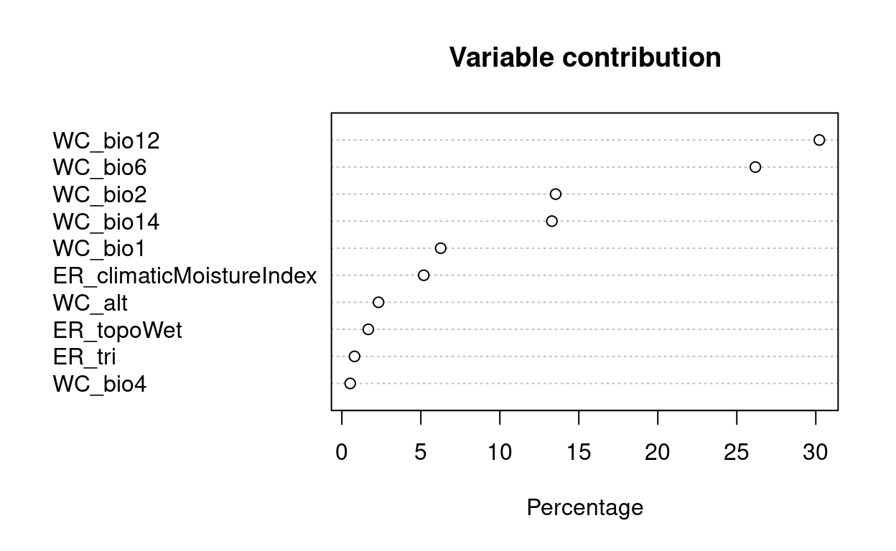

Learning Objectives:
Lab 1a - Explore
- Fetch species observations from the Global Biodiversity Information Facility (GBIF.org) using an R package that wraps a function around their API.
- Fetch environmental data for defining environmental relationship in the species distribution model (SDM).
- Generate pseudo-absences, or background, points with which to differentiate from the species presence points in the SDM.
- Extract underlying environmental data from points.
- Plot term plots of each environmental predictor with the species response.
Lab 1b - Logistic Regression
- Pairs plot to show correlation between variables and avoid multicollinearity (see 8.2 Many predictors in a model) Logistic Regression seen as an evolution of techniques
- Linear Model to show simplest multivariate regression, but predictions can be outside the binary values.
- Generalized Linear Model uses a logit transformation to constrain the outputs to being within two values.
- Generalized Additive Model allows for “wiggle” in predictor terms.
- Maxent (Maximum Entropy) is a presence-only modeling technique that allows for a more complex set of shapes between predictor and response.
Lab 1c - Decision Trees
explore Supervised Classification for categorical values
- this is considered a Classification, while Supervised Classification for continuous values is called a Regression
use Decision Trees as a Classification technique to classify categorical species presence and absence data
- specifically, use Recursive Partitioning and Random Forest techniques
Lab 1d - Evaluate the model
- Evaluate model performance
- Calibrate model parameters
Set up
show
# load packages, installing if missing
if (!require(librarian)){
install.packages("librarian")
library(librarian)
}
librarian::shelf(
caret, # m: modeling framework
dismo, # species distribution modeling: maxent(), predict(), evaluate(),
dplyr,
DT,
GGally,
ggplot2,
here,
htmltools,
leaflet,
maptools,
mapview,
mgcv,
pdp, # X: partial dependence plots
purrr,
ranger,
raster,
readr,
rgbif,
rgdal,
rJava,
rpart, # m: recursive partition modeling
rpart.plot, # m: recursive partition plotting
rsample, # d: split train/test data
sdmpredictors,
sf,
skimr, # d: skim summarize data table
spocc,
tidyr,
usdm, # uncertainty analysis for species distribution models: vifcor()
vip) # X: variable importance
select = dplyr::select
select <- dplyr::select # overwrite raster::select
options(
scipen = 999,
readr.show_col_types = F)
# set random seed for reproducibility
set.seed(42)
#set ggplot theme
ggplot2::theme_set(ggplot2::theme_light())
# directory to store data
dir_data <- here("data")
dir.create(dir_data, showWarnings = F)
pts_env_csv <- file.path(dir_data, "pts_env.csv")
pts_env <- read_csv(pts_env_csv)
pts_geo <- file.path(dir_data, "pts.geojson")
env_stack_grd <- file.path(dir_data, "env_stack.grd")
mdl_maxv_rds <- file.path(dir_data, "mdl_maxent_vif.rds")
pts <- read_sf(pts_geo)
env_stack <- raster::stack(env_stack_grd)
Lab 1 - Explore
1. Get species observation data for Necturus maculosus, the common mudpuppy salamander from GBIF
2. Image of N. maculosus

Retrieve species occurrence data from GBIF
retrieve only observations with latitude and longitude coordinates
there are 1,205 N. maculosus observations in total
Extract and clean data from the GBIF retrieval results
- keep only N. maculosus observation points
- keep only relevant column information
- remove duplicate observations
- after cleaning, there are 776 N. maculosus observation points
Use longitude and latitude to create points of observation and put them in a data frame
- add CRS 4326
show
obs_csv <- file.path(dir_data, "obs.csv")
obs_geo <- file.path(dir_data, "obs.geojson")
redo <- TRUE
if (!file.exists(obs_geo) | redo){
(res <- spocc::occ(
query = 'Necturus maculosus',
from = 'gbif',
limit = 10000,
has_coords = T))
# extract data frame from result
df <- res$gbif$data[[1]]
#clean the data
df_clean <- df %>%
filter(name %in% c("Necturus maculosus (Rafinesque, 1818)", "Necturus maculosus maculosus")) %>% #remove weirdly named points
filter(longitude < 0) %>% #remove one observation in Europe
select(c("name", "longitude", "latitude", "key", "lifeStage", "stateProvince", "year"))
#remove duplicates
dups2 <- duplicated(df_clean[, c('longitude', 'latitude')])
sum(dups2)
df_clean <- df_clean[!dups2, ]
readr::write_csv(df_clean, obs_csv)
# convert to points of observation from lon/lat columns in data frame
obs <- df_clean %>%
sf::st_as_sf(
coords = c("longitude", "latitude"),
crs = st_crs(4326))
sf::write_sf(obs, obs_geo, delete_dsn=T)
}
obs <- sf::read_sf(obs_geo)
nrow(obs) # number of rows
[1] 8113. Map the distribution of points
show
#mapview::mapview(obs, map.types = "Stamen.Watercolor")
4. Question 1. How many observations total are in GBIF for your species?
In total, GBIF contains 1,205 observations of N. maculosus.
5. Question 2. Do you see any odd observations, like marine species on land or vice versa? If so, please see the Data Cleaning and explain what you did to fix or remove these points.
Yes, I removed observations with the incorrect species name as well as one outlier observation point located in Europe. I also removed 421 duplicate observations.
Get Environment Data using sdmpredictors
Presence
- retrieve terrestrial environmental data for predicting the niche of the N. maculosus observations
show
dir_env <- file.path(dir_data, "env")
# set a default data directory
options(sdmpredictors_datadir = dir_env)
# choosing terrestrial data only
env_datasets <- sdmpredictors::list_datasets(terrestrial = TRUE, marine = FALSE)
View layers from the WorldClim and ENVIREM datasets
show
# choose datasets for a vector
env_datasets_vec <- c("WorldClim", "ENVIREM")
# get layers
env_layers <- sdmpredictors::list_layers(env_datasets_vec)
6. Select appropriate layers
Prior work suggests that N. maculosus species distribution is most influenced by environmental variables not related to climate such as urban development, agriculture, tree canopy cover, and road density (Fischer 2020). However, other aquatic salamander species such as Ambystoma ordinarium, a mole salamander from Mexico, have been shown to be best predicted by WorldClim variables (Escalera-Vásquez et al. 2018). Furthermore, as ectotherms, salamanders are known to be sensitive to both temperature and moisture shifts (McEntire and Maerz 2019).

WorldClim:
- altitude
- annual mean temperature
- mean diurnal temperature range
- temperature seasonality
- minimum temperature of the coldest month
- annual precipitation
- precipitation of the driest month
ENVIREM
- climatic moisture index
- terrain roughness index
- topographic wetness
map the environmental layers on a global scale
show
# choose layers after some inspection and perhaps consulting literature
env_layers_vec <- c("WC_alt", #altitude
"WC_bio1", #annual mean temp
"WC_bio2", #mean diurnal temp range
"WC_bio4", #temperature seasonality
"WC_bio6", #minimum temperature of the coldest month
"WC_bio12", #annual precipitation
"WC_bio14", #precipitation of the driest month
"ER_climaticMoistureIndex", #climatic moisture index
"ER_tri", #terrain roughness index
"ER_topoWet") #topographic wetness
# get layers
env_stack <- load_layers(env_layers_vec)
# interactive plot layers, hiding all but first (select others)
#mapview(env_stack, hide = T)
Create a convex hull to crop the environmental layers to the area of interest
- map the convex hull
show
obs_hull_geo <- file.path(dir_data, "obs_hull.geojson")
env_stack_grd <- file.path(dir_data, "env_stack.grd")
if (!file.exists(obs_hull_geo) | redo){
# make convex hull around points of observation
obs_hull <- sf::st_convex_hull(st_union(obs))
# save obs hull
write_sf(obs_hull, obs_hull_geo)
}
obs_hull <- read_sf(obs_hull_geo)
#mapview(list(obs, obs_hull))
7. Map the environmental raster clipped to the species range
show
if (!file.exists(env_stack_grd) | redo){
obs_hull_sp <- sf::as_Spatial(obs_hull)
env_stack <- raster::mask(env_stack, obs_hull_sp) %>%
raster::crop(extent(obs_hull_sp))
writeRaster(env_stack, env_stack_grd, overwrite=T)
}
env_stack <- stack(env_stack_grd)
plot(env_stack, nc=2)
show
# show map
# mapview(obs) +
# mapview(env_stack, hide = T) # makes html too big for Github
8. Map pseudo-absence points
- count observations in the raster
- create a mask
- generate random pseudo-absence points inside the mask
- map the presence and pseudo-absence points
show
absence_geo <- file.path(dir_data, "absence.geojson")
pts_geo <- file.path(dir_data, "pts.geojson")
pts_env_csv <- file.path(dir_data, "pts_env.csv")
if (!file.exists(absence_geo) | redo){
# get raster count of observations
r_obs <- rasterize(
sf::as_Spatial(obs), env_stack[[1]], field=1, fun='count')
# show map
# mapview(obs) +
# mapview(r_obs)
# create mask for
r_mask <- mask(env_stack[[1]] > -Inf, r_obs, inverse=T)
# generate random points inside mask
absence <- dismo::randomPoints(r_mask, nrow(obs)) %>%
as_tibble() %>%
st_as_sf(coords = c("x", "y"), crs = 4326)
write_sf(absence, absence_geo, delete_dsn=T)
}
absence <- read_sf(absence_geo)
# show map of presence, ie obs, and absence
# mapview(obs, col.regions = "green") +
# mapview(absence, col.regions = "gray")
Combine presence and absence into single set of labeled points
display a table of all labeled data points that will feed into the species distribution model
- Y is the present column where 1 = present and 0 = absent
- X is all other columns (the environmental layers)
show
if (!file.exists(pts_env_csv) | redo){
# combine presence and absence into single set of labeled points
pts <- rbind(
obs %>%
mutate(
present = 1) %>%
select(present, key),
absence %>%
mutate(
present = 0,
key = NA)) %>%
mutate(
ID = 1:n()) %>%
relocate(ID)
write_sf(pts, pts_geo, delete_dsn=T)
# extract raster values for points
pts_env <- raster::extract(env_stack, as_Spatial(pts), df=TRUE) %>%
tibble() %>%
# join present and geometry columns to raster value results for points
left_join(
pts %>%
select(ID, present),
by = "ID") %>%
relocate(present, .after = ID) %>%
# extract lon, lat as single columns
mutate(
#present = factor(present),
lon = st_coordinates(geometry)[,1],
lat = st_coordinates(geometry)[,2]) %>%
select(-geometry)
write_csv(pts_env, pts_env_csv)
}
pts_env <- read_csv(pts_env_csv)
pts_env %>%
# show first 10 presence, last 10 absence
slice(c(1:10, (nrow(pts_env)-9):nrow(pts_env))) %>%
DT::datatable(
rownames = F,
options = list(
dom = "t",
pageLength = 20))
9. Environmental variable term plots
- density histogram where density is on the y axis
show
pts_env %>%
select(-ID) %>%
mutate(
present = factor(present)) %>%
pivot_longer(-present) %>%
ggplot() +
geom_density(aes(x = value, fill = present)) +
scale_fill_manual(values = alpha(c("gray", "green"), 0.5)) +
scale_x_continuous(expand=c(0,0)) +
scale_y_continuous(expand=c(0,0)) +
theme_bw() +
facet_wrap(~name, scales = "free") +
theme(
legend.position = c(1, 0),
legend.justification = c(1, 0))
Lab 2 - Logistic Regression
10. Use GGally to look at pair plots and examine correlations between environmental variables
show
# GGally::ggpairs(
# select(pts_env, -ID),
# aes(color = factor(present)))
Logistic Regression
Setup Data
- drop rows of data with any NA values (later, we’ll learn how to impute values)
- remove terms we don’t want to model
show
d <- pts_env %>% select(-ID) %>% # remove terms we don't want to model tidyr::drop_na() # drop the rows with NA values11. Linear Model
- dependent variable Y: presence/absence, aka 1/0
- independent variables X: everything else in the dataframe, aka the environmental layers
Note: a linear model is ineffective because it predicts values outside the 0 - 1 range
show
mod <- lm(present ~ ., data = d)12. Generalized Linear Model
To solve this problem, we will apply a Logit TransformationNote: we are not within the 0 - 1 range we want to be in13. GLM Term Plots
show
termplot(mod, partial.resid = TRUE, se = TRUE, main = F)
14. Generalized Additive Model (GAM)
We can further improve the GLM by adding “wiggle” to the relationship between the predictor and response variablesshow
# fit a generalized additive model with smooth predictors mod <- mgcv::gam( formula = present ~ s(WC_alt) + s(WC_bio1) + s(WC_bio2) + s(WC_bio4) + s(WC_bio6) + s(WC_bio12) + s(WC_bio14) + s(ER_climaticMoistureIndex) + s(ER_tri) + s(ER_topoWet) + s(lon) + s(lat), family = binomial, data = d) summary(mod)Family: binomial Link function: logit Formula: present ~ s(WC_alt) + s(WC_bio1) + s(WC_bio2) + s(WC_bio4) + s(WC_bio6) + s(WC_bio12) + s(WC_bio14) + s(ER_climaticMoistureIndex) + s(ER_tri) + s(ER_topoWet) + s(lon) + s(lat) Parametric coefficients: Estimate Std. Error z value Pr(>|z|) (Intercept) -12.407 6.788 -1.828 0.0676 . --- Signif. codes: 0 '***' 0.001 '**' 0.01 '*' 0.05 '.' 0.1 ' ' 1 Approximate significance of smooth terms: edf Ref.df Chi.sq p-value s(WC_alt) 3.920 4.687 5.396 0.318277 s(WC_bio1) 4.876 6.217 8.535 0.181948 s(WC_bio2) 4.952 5.825 10.227 0.100291 s(WC_bio4) 3.454 4.615 6.972 0.187423 s(WC_bio6) 7.611 8.347 13.266 0.108785 s(WC_bio12) 8.984 8.999 52.704 < 0.0000000000000002 s(WC_bio14) 5.844 6.834 13.689 0.042906 s(ER_climaticMoistureIndex) 5.699 6.768 16.897 0.017936 s(ER_tri) 7.933 8.013 23.415 0.002864 s(ER_topoWet) 5.576 6.694 13.403 0.054165 s(lon) 8.819 8.963 44.233 < 0.0000000000000002 s(lat) 8.997 8.999 27.985 0.000958 s(WC_alt) s(WC_bio1) s(WC_bio2) s(WC_bio4) s(WC_bio6) s(WC_bio12) *** s(WC_bio14) * s(ER_climaticMoistureIndex) * s(ER_tri) ** s(ER_topoWet) . s(lon) *** s(lat) *** --- Signif. codes: 0 '***' 0.001 '**' 0.01 '*' 0.05 '.' 0.1 ' ' 1 R-sq.(adj) = 0.625 Deviance explained = 57.4% UBRE = -0.31384 Scale est. = 1 n = 161815. GAM Term Plots
show
plot(mod, scale=0)
16. Question: Which GAM environmental variables, and even range of values, seem to contribute most towards presence (above 0 response) versus absence (below 0 response)?
Annual Precipitation (
WC_bio12) and Longitude (lon) were the most statistically significant in the GAM model (p-value <<< 0). The Climatic Moisture Index (ER_climaticMoistureIndex), Terrain Roughness Index (ER_tri), and latitude (lat) were the next most statistically significant variables in the GAM model (p-value < 0.001).17. Maxent (Max Entropy)
This is the most commonly used species distribution model because it requires few input data points, all of which can be presence observation points, and is easy to use with a Java GUI. - plot environmental rastersGet present-only observation points and fit maximum entropy modelshow

show
obs_geo <- file.path(dir_data, "obs.geojson") obs_sp <- read_sf(obs_geo) %>% sf::as_Spatial() # maxent prefers sp::SpatialPoints over newer sf::sf class #note: always breaks when you try to run it all at once. have to restart the R session, re-run the Set Up chunk, then this runs. mod <- maxent(env_stack, obs_sp)This is MaxEnt version 3.4.318. Maxent variable contribution plot
- plot variable contributions per predictor
show
plot(mod)
19. Maxent Term Plots
show
response(mod)20. Question: Which Maxent environmental variables, and even range of values, seem to contribute most towards presence (closer to 1 response) and how might this differ from the GAM results?
Annual precipitation (
WC_bio12) < 600 and annual precipitation > 1100, Terrain Roughness Index (ER_tri) > 100, and minimum temperature (WC_bio6) < -35 and WC_bio6 > 5 all seem to demonstrate fairly high predicted values. This is fewer variables than the GAM model, but there is overlap with annual precipitation and the Terrain Roughness Index. However, minimum temperature was not suggested by the GAM model.Predict
- plot variable contributions per predictor